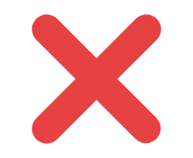

Slog Tool Starting...
公开服务器
连接目标：
身份ID：
本软件为
开源
项目，不鼓励自建服务器私有使用，因此暂不提供身份认证功能。
保存路径：
Tip：配置将在关闭选项菜单后保存[{{statistic.launch_time}}]
{{log.url}}
{{logs.length - index}}
[{{log.time}}]
选项
{{connected===1?'断开':'连接'}}
等待
清空
保存
关于

{{toast.msg}}